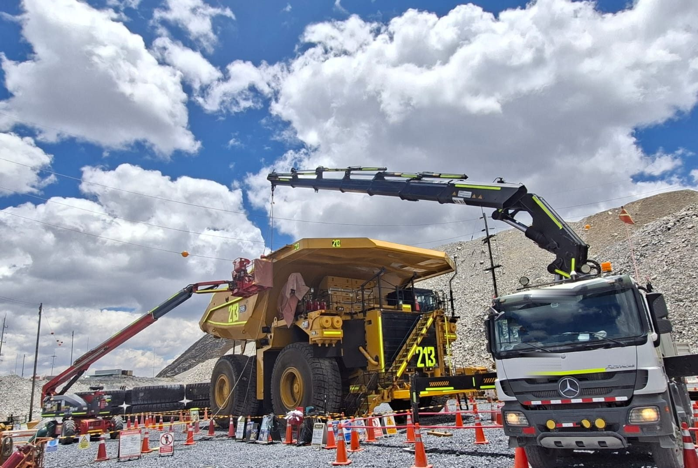
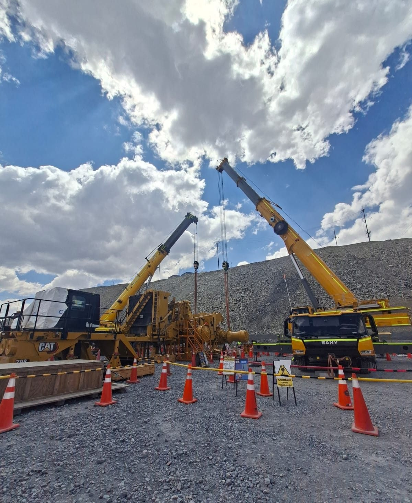
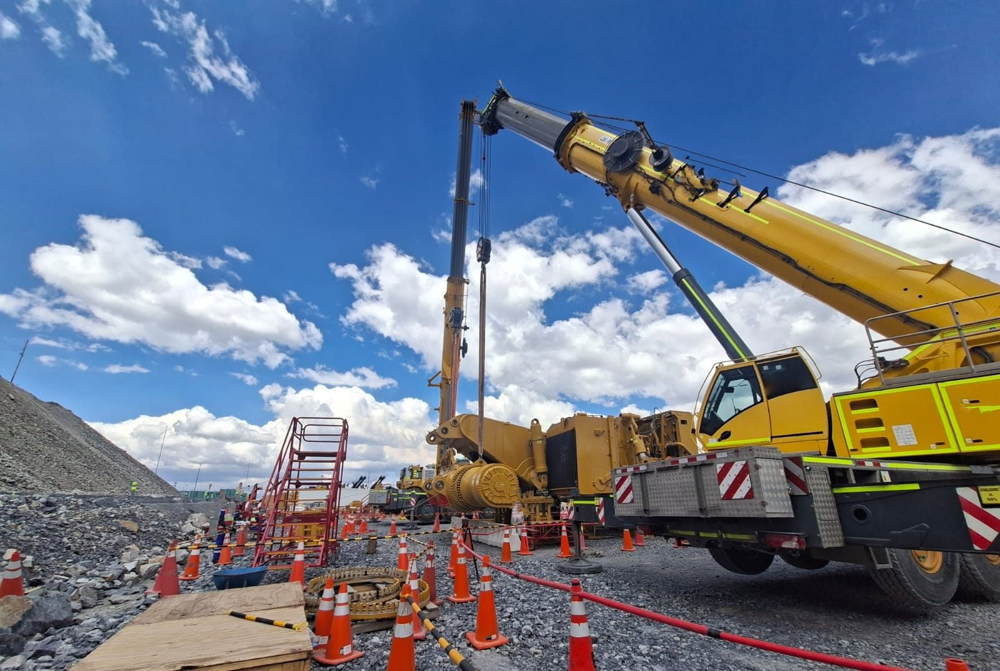

Antamina – Plataforma de Armado
2026 · MineríaSupervisor de Izajes · en coordinación con Ferreyros
Planificación y control de maniobras en el armado de camiones mineros Caterpillar 798, garantizando secuencias de montaje seguras y la continuidad de la operación.
- GMK5250 · 250 TN
- SAC2500 · 250 TN
- SAC3500 · 350 TN
- Montacargas 35 TN
- Camión grúa 32 TN
- Manlift


